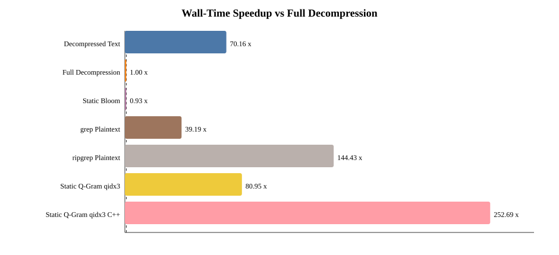
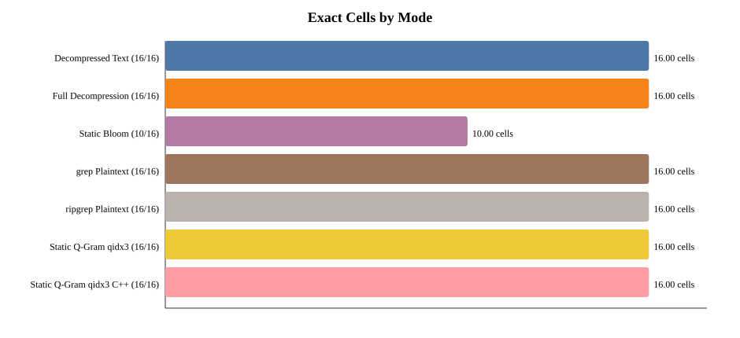
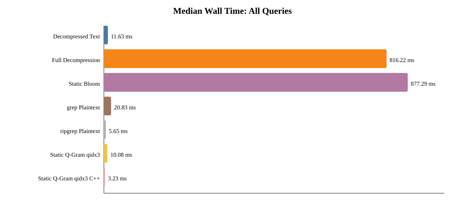
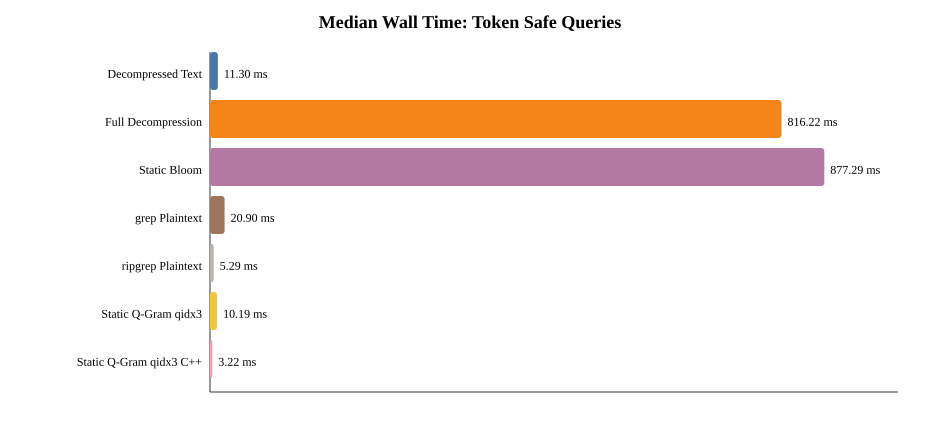
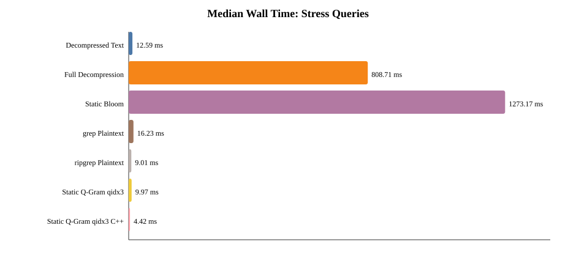
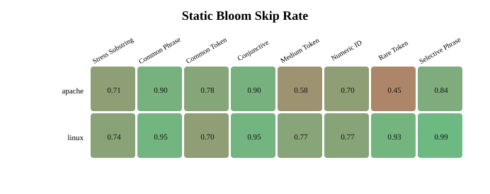
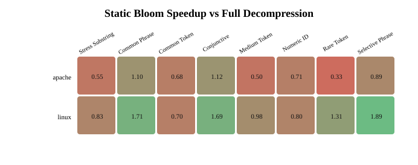

Created at: 2026-05-18T22:21:48.643157
Datasets: linux, apache
Queries: common_token, medium_token, rare_token, common_phrase, selective_phrase, numeric_identifier, conjunctive, bloom_stress_substring
Modes: decompressed_text, full_decompression, static_bloom, grep_plaintext, ripgrep_plaintext, static_qgram_index_mmap_compact, static_qgram_index_mmap_cpp
Raw run records: 448; cell rows: 112.
| Mode | Cells | Median Wall (ms) | Median CPU (ms) | Median RSS (MB) | Median Recall | Median F1 | All Exact |
|---|---|---|---|---|---|---|---|
| Decompressed Text | 16 | 11.633 | 11.338 | 25.67 | 1.000 | 1.000 | True |
| Full Decompression | 16 | 816.217 | 816.175 | 31.99 | 1.000 | 1.000 | True |
| Static Bloom | 16 | 877.286 | 876.493 | 53.48 | 1.000 | 1.000 | False |
| grep Plaintext | 16 | 20.829 | 2.619 | 26.45 | 1.000 | 1.000 | True |
| ripgrep Plaintext | 16 | 5.651 | 2.719 | 26.41 | 1.000 | 1.000 | True |
| Static Q-Gram qidx3 | 16 | 10.083 | 7.179 | 28.64 | 1.000 | 1.000 | True |
| Static Q-Gram qidx3 C++ | 16 | 3.230 | 1.506 | 26.03 | 1.000 | 1.000 | True |
| Mode | Exact Cells | Median FN Sum | Median FP Sum |
|---|---|---|---|
| Decompressed Text | 16/16 | 0 | 0 |
| Full Decompression | 16/16 | 0 | 0 |
| Static Bloom | 10/16 | 8107 | 0 |
| grep Plaintext | 16/16 | 0 | 0 |
| ripgrep Plaintext | 16/16 | 0 | 0 |
| Static Q-Gram qidx3 | 16/16 | 0 | 0 |
| Static Q-Gram qidx3 C++ | 16/16 | 0 | 0 |
| Query Group | Exact Cells | False Positives | False Negatives | Median Skip Rate | Median Speedup |
|---|---|---|---|---|---|
| token_safe | 10/14 | 0 | 198 | 81.15% | 0.94x |
| stress | 0/2 | 0 | 7909 | 72.67% | 0.69x |






